Data Loading
Contents
import anndata
import scanpy as sc
import pandas as pd
import numpy as np
import seaborn as sns
import matplotlib.pyplot as plt
import matplotlib.cm as cm
from matplotlib.colors import ListedColormap
import scipy
import sklearn.metrics
plt.style.use('seaborn-colorblind')
plt.rc('xtick', labelsize=11)
plt.rc('ytick', labelsize=11)
plt.rcParams.update({'font.size': 11})
/tmp/ipykernel_7950/4079999522.py:12: MatplotlibDeprecationWarning: The seaborn styles shipped by Matplotlib are deprecated since 3.6, as they no longer correspond to the styles shipped by seaborn. However, they will remain available as 'seaborn-v0_8-<style>'. Alternatively, directly use the seaborn API instead.
plt.style.use('seaborn-colorblind')
from platform import python_version
print(f'Python version: {python_version()}')
print(f'Scanpy version: {sc.__version__}')
Python version: 3.9.15
Scanpy version: 1.9.1
data_path = 'data/'
1. Data Loading#
# load raw protein dataset
filename = '20210919_DIANN_SingleCellOutput.pg_matrix_notnormalized.tsv'
cols = list(pd.read_csv(data_path + filename, nrows=1, sep='\t'))
prot = pd.read_csv(data_path + filename, usecols =[i for i in cols if 'TSCP_DIA_SingleCell' in i], sep='\t')
var_annotation = pd.read_csv(data_path + filename, index_col = 'Genes', usecols = ['Genes'], sep='\t')
prot = prot.fillna(0.)
prot[prot == 'Filtered'] = 0.
adata_prot_raw = anndata.AnnData(prot.transpose())
adata_prot_raw.var = var_annotation
adata_prot_raw.var_names = adata_prot_raw.var_names.map(str)
adata_prot_raw.var_names_make_unique()
---------------------------------------------------------------------------
FileNotFoundError Traceback (most recent call last)
Cell In[4], line 5
1 # load raw protein dataset
3 filename = '20210919_DIANN_SingleCellOutput.pg_matrix_notnormalized.tsv'
----> 5 cols = list(pd.read_csv(data_path + filename, nrows=1, sep='\t'))
6 prot = pd.read_csv(data_path + filename, usecols =[i for i in cols if 'TSCP_DIA_SingleCell' in i], sep='\t')
7 var_annotation = pd.read_csv(data_path + filename, index_col = 'Genes', usecols = ['Genes'], sep='\t')
File /usr/share/miniconda/envs/test/lib/python3.9/site-packages/pandas/util/_decorators.py:311, in deprecate_nonkeyword_arguments.<locals>.decorate.<locals>.wrapper(*args, **kwargs)
305 if len(args) > num_allow_args:
306 warnings.warn(
307 msg.format(arguments=arguments),
308 FutureWarning,
309 stacklevel=stacklevel,
310 )
--> 311 return func(*args, **kwargs)
File /usr/share/miniconda/envs/test/lib/python3.9/site-packages/pandas/io/parsers/readers.py:680, in read_csv(filepath_or_buffer, sep, delimiter, header, names, index_col, usecols, squeeze, prefix, mangle_dupe_cols, dtype, engine, converters, true_values, false_values, skipinitialspace, skiprows, skipfooter, nrows, na_values, keep_default_na, na_filter, verbose, skip_blank_lines, parse_dates, infer_datetime_format, keep_date_col, date_parser, dayfirst, cache_dates, iterator, chunksize, compression, thousands, decimal, lineterminator, quotechar, quoting, doublequote, escapechar, comment, encoding, encoding_errors, dialect, error_bad_lines, warn_bad_lines, on_bad_lines, delim_whitespace, low_memory, memory_map, float_precision, storage_options)
665 kwds_defaults = _refine_defaults_read(
666 dialect,
667 delimiter,
(...)
676 defaults={"delimiter": ","},
677 )
678 kwds.update(kwds_defaults)
--> 680 return _read(filepath_or_buffer, kwds)
File /usr/share/miniconda/envs/test/lib/python3.9/site-packages/pandas/io/parsers/readers.py:575, in _read(filepath_or_buffer, kwds)
572 _validate_names(kwds.get("names", None))
574 # Create the parser.
--> 575 parser = TextFileReader(filepath_or_buffer, **kwds)
577 if chunksize or iterator:
578 return parser
File /usr/share/miniconda/envs/test/lib/python3.9/site-packages/pandas/io/parsers/readers.py:934, in TextFileReader.__init__(self, f, engine, **kwds)
931 self.options["has_index_names"] = kwds["has_index_names"]
933 self.handles: IOHandles | None = None
--> 934 self._engine = self._make_engine(f, self.engine)
File /usr/share/miniconda/envs/test/lib/python3.9/site-packages/pandas/io/parsers/readers.py:1218, in TextFileReader._make_engine(self, f, engine)
1214 mode = "rb"
1215 # error: No overload variant of "get_handle" matches argument types
1216 # "Union[str, PathLike[str], ReadCsvBuffer[bytes], ReadCsvBuffer[str]]"
1217 # , "str", "bool", "Any", "Any", "Any", "Any", "Any"
-> 1218 self.handles = get_handle( # type: ignore[call-overload]
1219 f,
1220 mode,
1221 encoding=self.options.get("encoding", None),
1222 compression=self.options.get("compression", None),
1223 memory_map=self.options.get("memory_map", False),
1224 is_text=is_text,
1225 errors=self.options.get("encoding_errors", "strict"),
1226 storage_options=self.options.get("storage_options", None),
1227 )
1228 assert self.handles is not None
1229 f = self.handles.handle
File /usr/share/miniconda/envs/test/lib/python3.9/site-packages/pandas/io/common.py:786, in get_handle(path_or_buf, mode, encoding, compression, memory_map, is_text, errors, storage_options)
781 elif isinstance(handle, str):
782 # Check whether the filename is to be opened in binary mode.
783 # Binary mode does not support 'encoding' and 'newline'.
784 if ioargs.encoding and "b" not in ioargs.mode:
785 # Encoding
--> 786 handle = open(
787 handle,
788 ioargs.mode,
789 encoding=ioargs.encoding,
790 errors=errors,
791 newline="",
792 )
793 else:
794 # Binary mode
795 handle = open(handle, ioargs.mode)
FileNotFoundError: [Errno 2] No such file or directory: 'data/20210919_DIANN_SingleCellOutput.pg_matrix_notnormalized.tsv'
# load protein dataset with local regression normalization
filename = '20210919_DIANN_SingleCellOutput.pg_matrix_cellcyclepred.tsv'
cols = list(pd.read_csv(data_path + filename, nrows=1, sep='\t'))
prot = pd.read_csv(data_path + filename, usecols =[i for i in cols if 'TSCP_DIA_SingleCell' in i], sep='\t')
var_annotation = pd.read_csv(data_path + filename, index_col = 'Genes', usecols = ['Genes'], sep='\t')
prot[prot == 'Filtered'] = np.nan
adata_prot = anndata.AnnData(prot.transpose())
adata_prot.var = var_annotation
adata_prot.var_names = adata_prot.var_names.map(str)
adata_prot.var_names_make_unique()
protein_adata = adata_prot
# load data from "HeLa-CCL2 cell heterogeneity studied by single-cell DNA and RNA sequencing"
# https://www.ncbi.nlm.nih.gov/geo/query/acc.cgi?acc=GSE129447
# (SMART-Seq2 data from 9, 14 and 20 passages)
adata1 = anndata.read_text(data_path + 'GSE129447_RAW/GSM3713084_HeLa_1.txt').transpose()
adata2 = anndata.read_text(data_path + 'GSE129447_RAW/GSM3713085_HeLa_2.txt').transpose()
adata3 = anndata.read_text(data_path + 'GSE129447_RAW/GSM3713086_HeLa_3.txt').transpose()
adata3.var_names = adata1.var_names
adata2 = adata2[:, adata1.var_names] # without ERCC genes
smartseq_adata = anndata.concat([adata1, adata2, adata3])
Observation names are not unique. To make them unique, call `.obs_names_make_unique`.
Variable names are not unique. To make them unique, call `.var_names_make_unique`.
# load data from "The transcriptome dynamics of single cells during the cell cycle"
# https://www.ncbi.nlm.nih.gov/geo/query/acc.cgi?acc=GSE142277
adata1_exon = anndata.read_text(data_path + 'GSE142277_RAW/GSM4224315_out_gene_exon_tagged.dge_exonssf002_WT.txt').transpose()
adata1_intron = anndata.read_text(data_path + 'GSE142277_RAW/GSM4224315_out_gene_exon_tagged.dge_intronssf002_WT.txt').transpose()
adata2_exon = anndata.read_text(data_path + 'GSE142277_RAW/GSM4224316_out_gene_exon_tagged.dge_exonssf002_KO.txt').transpose()
adata2_intron = anndata.read_text(data_path + 'GSE142277_RAW/GSM4224316_out_gene_exon_tagged.dge_intronssf002_KO.txt').transpose()
intersection = list(set(adata1_exon.var_names).intersection(adata1_intron.var_names))
intersection_part = adata1_exon[:, intersection].copy()
intersection_part.X += adata1_intron[:, intersection].X
adata1_2 = anndata.concat([
intersection_part,
adata1_exon[:, [gene for gene in adata1_exon.var_names if gene not in adata1_intron.var_names]],
adata1_intron[:, [gene for gene in adata1_intron.var_names if gene not in adata1_exon.var_names]],
], axis=1)
intersection = list(set(adata2_exon.var_names).intersection(adata2_intron.var_names))
intersection_part = adata2_exon[:, intersection].copy()
intersection_part.X += adata2_intron[:, intersection].X
adata2_2 = anndata.concat([
intersection_part,
adata2_exon[:, [gene for gene in adata2_exon.var_names if gene not in adata2_intron.var_names]],
adata2_intron[:, [gene for gene in adata2_intron.var_names if gene not in adata2_exon.var_names]],
], axis=1)
# second dataset from "The transcriptome dynamics of single cells during the cell cycle"
# https://www.ncbi.nlm.nih.gov/geo/query/acc.cgi?acc=GSM4226257
adata_exon = anndata.read_text(data_path + 'GSM4226257_RAW/GSM4226257_out_gene_exon_tagged.dge_exonsds_046.txt').transpose()
adata_intron = anndata.read_text(data_path + 'GSM4226257_RAW/GSM4226257_out_gene_exon_tagged.dge_intronsds_046.txt').transpose()
intersection = list(set(adata_exon.var_names).intersection(adata_intron.var_names))
intersection_part = adata_exon[:, intersection]
intersection_part.X += adata_intron[:, intersection].X
adata1_3 = anndata.concat([
intersection_part,
adata_exon[:, [gene for gene in adata_exon.var_names if gene not in adata1_intron.var_names]],
adata_intron[:, [gene for gene in adata_intron.var_names if gene not in adata1_exon.var_names]],
], axis=1)
adata1_3.var_names_make_unique()
tenx_adata = anndata.concat([adata1_2, adata2_2, adata1_3], join='outer', fill_value=0.)
Variable names are not unique. To make them unique, call `.var_names_make_unique`.
Observation names are not unique. To make them unique, call `.obs_names_make_unique`.
1.1. True Single-Cell Proteomics - Cell Cycle Analysis#
1.1.1. Fig. 4C - Total protein signal per cell grouped by cell cycle stage#
adata_raw = adata_prot_raw.copy()
sc.pp.filter_cells(adata_raw, min_genes=600)
sc.pp.filter_genes(adata_raw, min_cells=0.15 * adata_raw.shape[0])
adata_raw.obs['cell cycle stage'] = [
'G1' if '_G1_' in name
else 'G1-S' if '_TB_' in name
else 'G2' if '_G2_' in name
else 'G2-M' if '_NB_' in name
else 'other'
for name in adata_raw.obs_names
]
/Users/sabrina.richter/anaconda3/envs/tissue/lib/python3.8/site-packages/anndata/_core/anndata.py:1094: FutureWarning: is_categorical is deprecated and will be removed in a future version. Use is_categorical_dtype instead
if not is_categorical(df_full[k]):
size = {cond: adata_raw[adata_raw.obs['cell cycle stage'] == cond].X.sum(axis=1)
for cond in ['G1', 'G1-S', 'G2', 'G2-M']}
x = np.concatenate([[cond] * len(cells) for cond, cells in size.items()])
y = np.concatenate([cells for cells in size.values()])
sns.boxplot(x, y)
plt.xlabel("Cell cycle stage")
plt.ylabel("Raw MS signal")
plt.show()
/Users/sabrina.richter/anaconda3/envs/tissue/lib/python3.8/site-packages/seaborn/_decorators.py:36: FutureWarning: Pass the following variables as keyword args: x, y. From version 0.12, the only valid positional argument will be `data`, and passing other arguments without an explicit keyword will result in an error or misinterpretation.
warnings.warn(
for cond, d in size.items():
print(f'{cond}:\t n = {len(d)},\t median = {np.median(d)}')
G1: n = 84, median = 8477524.0
G1-S: n = 41, median = 12429287.0
G2: n = 52, median = 14910479.0
G2-M: n = 45, median = 9016382.0
1.1.2. Fig. 4D - Principal Component Analysis#
def impute_downshifted_normal_global(
adata,
scale=0.3,
shift=1.8,
):
np.random.seed(42)
mean = np.nanmean(adata.X)
std = np.nanstd(adata.X)
draws = np.random.normal(loc=mean - shift * std, scale=scale * std, size=np.sum(np.isnan(adata.X)))
adata.X[np.isnan(adata.X)] = draws
adata = protein_adata.copy()
sc.pp.filter_cells(adata, min_genes=600)
sc.pp.filter_genes(adata, min_cells=0.15 * adata.shape[0])
sc.pp.log1p(adata)
impute_downshifted_normal_global(adata)
adata.obs['cell cycle stage'] = [
'G1' if '_G1_' in name
else 'G1-S' if '_TB_' in name
else 'G2' if '_G2_' in name
else 'G2-M' if '_NB_' in name
else 'other'
for name in adata.obs_names
]
adata = adata[adata.obs['cell cycle stage'] != 'other']
/Users/sabrina.richter/anaconda3/envs/tissue/lib/python3.8/site-packages/anndata/_core/anndata.py:1094: FutureWarning: is_categorical is deprecated and will be removed in a future version. Use is_categorical_dtype instead
if not is_categorical(df_full[k]):
sc.pp.pca(adata)
sc.pl.pca(adata, color='cell cycle stage', annotate_var_explained=True)
plt.show()
/Users/sabrina.richter/anaconda3/envs/tissue/lib/python3.8/site-packages/anndata/_core/anndata.py:1192: FutureWarning: is_categorical is deprecated and will be removed in a future version. Use is_categorical_dtype instead
if is_string_dtype(df[key]) and not is_categorical(df[key])
... storing 'cell cycle stage' as categorical
1.1.3. Fig. 4E - Cell cycle stage prediction#
adata = protein_adata.copy()
sc.pp.filter_cells(adata, min_genes=600)
sc.pp.filter_genes(adata, min_cells=0.7 * adata.shape[0])
sc.pp.log1p(adata)
adata.X = np.nan_to_num(adata.X)
adata.obs['cell cycle stage'] = [
'G1' if '_G1_' in name
else 'G1-S' if '_TB_' in name
else 'G2' if '_G2_' in name
else 'G2-M' if '_NB_' in name
else 'other'
for name in adata.obs_names
]
adata = adata[adata.obs['cell cycle stage'] != 'other']
/Users/sabrina.richter/anaconda3/envs/tissue/lib/python3.8/site-packages/anndata/_core/anndata.py:1094: FutureWarning: is_categorical is deprecated and will be removed in a future version. Use is_categorical_dtype instead
if not is_categorical(df_full[k]):
cc_markers = pd.read_excel("CellCycleMarker.xlsx", "Tami_Geiger")
g1_list = cc_markers['G1'][1:-1]
g1_list = [g for g in g1_list if g in adata.var_names]
print(f'G1:\t {", ".join(g1_list)}')
s_list = cc_markers['S'][1:-1]
s_list = [g for g in s_list if g in adata.var_names]
print(f'S:\t {", ".join(s_list)}')
g2m_list = cc_markers['G2M'][1:-1]
g2m_list = [g for g in g2m_list if g in adata.var_names]
print(f'G2M:\t {", ".join(g2m_list)}')
G1: MARCKS, KRT1, HIST1H1E, KRT18, HNRNPA1, CHCHD3, CD44, NASP, TARDBP, PODXL, SUMO2, STMN1, TRIM28, SPTAN1
S: NOLC1, ATP2A2, CANX, TMX1, CKB, SLC25A3, SLC16A1, MT-CO2, SRPRB, CYB5R3, LETM1, ANP32B
G2M: TOP2A, HMGB1, EIF5B, TMSB10, EIF3D, ANP32A, RCC2, FASN, LUC7L2, AARS, KPNA2, CKAP5
sc.tl.score_genes(adata, g1_list, score_name='g1')
sc.tl.score_genes(adata, s_list, score_name='s')
sc.tl.score_genes(adata, g2m_list, score_name='g2m')
Trying to set attribute `.obs` of view, copying.
protein_data_nb_tb = adata[np.array(adata.obs['cell cycle stage'] == 'G2-M')
| np.array(adata.obs['cell cycle stage'] == 'G1-S')]
score = {
'G2-M': protein_data_nb_tb.obs['g2m'].values,
'S': protein_data_nb_tb.obs['s'].values,
'G1': protein_data_nb_tb.obs['g1'].values
}
for phase in score.keys():
true_label = np.array([phase in a for a in protein_data_nb_tb.obs['cell cycle stage'].values])
scores = score[phase]
fp, tp, _ = sklearn.metrics.roc_curve(true_label, scores)
plt.plot(fp, tp, label=phase)
plt.plot([0, 1], [0, 1], c='black')
plt.gca().set_aspect('equal')
plt.xlabel('False-positive')
plt.ylabel('True-positive')
plt.legend()
plt.title('G2-M vs G1-S')
plt.show()
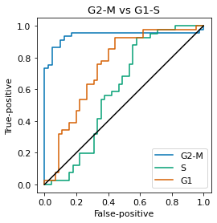
for phase in score.keys():
true_label = np.array([phase in a for a in protein_data_nb_tb.obs['cell cycle stage'].values])
scores = score[phase]
print(f'AUC using the {phase} score: {sklearn.metrics.roc_auc_score(true_label, scores):.2f}')
AUC using the G2-M score: 0.94
AUC using the S score: 0.60
AUC using the G1 score: 0.74
1.2. True Single-Cell Proteomics - Comparison with Transcriptomics Data#
1.2.1. Fig. 5A - Gene expression completeness within cells#
full_data = {
'Proteins': protein_adata.copy(),
'SMARTseq2': smartseq_adata.copy(),
'Drop-Seq': tenx_adata.copy(),
}
for adata in full_data.values():
sc.pp.filter_cells(adata, min_genes=600)
Observation names are not unique. To make them unique, call `.obs_names_make_unique`.
/Users/sabrina.richter/anaconda3/envs/tissue/lib/python3.8/site-packages/anndata/_core/anndata.py:1094: FutureWarning: is_categorical is deprecated and will be removed in a future version. Use is_categorical_dtype instead
if not is_categorical(df_full[k]):
Observation names are not unique. To make them unique, call `.obs_names_make_unique`.
Observation names are not unique. To make them unique, call `.obs_names_make_unique`.
for datasetname, adata in full_data.items():
print(f'{datasetname}\t {adata.shape},\t mean completeness per cell: {np.median((adata.X > 0).mean(axis=1)):.2f}')
Proteins (424, 2480), mean completeness per cell: 0.49
SMARTseq2 (720, 24990), mean completeness per cell: 0.28
Drop-Seq (5022, 41161), mean completeness per cell: 0.07
perc_expr = []
dataset_name = []
for datasetname, adata in full_data.items():
perc_expr += list((adata.X > 0).mean(axis=1))
dataset_name += [datasetname] * adata.X.shape[0]
sns.violinplot(y=perc_expr, x=dataset_name)
plt.ylabel('Gene/Protein expression completeness per cell')
plt.show()
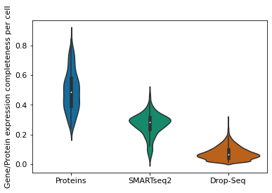
1.2.2. Fig. 5B - Principal Component Analysis#
full_data = {
'Proteins': protein_adata.copy(),
'SMART-Seq2': smartseq_adata.copy(),
'Drop-Seq': tenx_adata.copy(),
}
for adata in full_data.values():
sc.pp.filter_cells(adata, min_genes=600)
sc.pp.filter_genes(adata, min_cells=0.15 * adata.shape[0])
shared_genes = set(full_data['Proteins'].var_names)
for adata in full_data.values():
shared_genes = shared_genes.intersection(adata.var_names)
intersection_data = {
datasetname: adata[:, list(shared_genes)]
for datasetname, adata in full_data.items()
}
for adata in intersection_data.values():
adata.X = np.nan_to_num(adata.X)
sc.pp.normalize_total(adata, target_sum=1e6)
sc.pp.log1p(adata.X)
for datasetname, adata in intersection_data.items():
adata.obs['dataset'] = datasetname
joined = anndata.concat([adata for adata in intersection_data.values()])
Observation names are not unique. To make them unique, call `.obs_names_make_unique`.
/Users/sabrina.richter/anaconda3/envs/tissue/lib/python3.8/site-packages/anndata/_core/anndata.py:1094: FutureWarning: is_categorical is deprecated and will be removed in a future version. Use is_categorical_dtype instead
if not is_categorical(df_full[k]):
Observation names are not unique. To make them unique, call `.obs_names_make_unique`.
Observation names are not unique. To make them unique, call `.obs_names_make_unique`.
Observation names are not unique. To make them unique, call `.obs_names_make_unique`.
Observation names are not unique. To make them unique, call `.obs_names_make_unique`.
/Users/sabrina.richter/anaconda3/envs/tissue/lib/python3.8/site-packages/scanpy/preprocessing/_normalization.py:155: UserWarning: Revieved a view of an AnnData. Making a copy.
view_to_actual(adata)
Observation names are not unique. To make them unique, call `.obs_names_make_unique`.
Observation names are not unique. To make them unique, call `.obs_names_make_unique`.
Observation names are not unique. To make them unique, call `.obs_names_make_unique`.
intersection_data
{'Proteins': AnnData object with n_obs × n_vars = 424 × 1672
obs: 'n_genes', 'dataset'
var: 'n_cells',
'SMART-Seq2': AnnData object with n_obs × n_vars = 720 × 1672
obs: 'n_genes', 'dataset'
var: 'n_cells',
'Drop-Seq': AnnData object with n_obs × n_vars = 5022 × 1672
obs: 'n_genes', 'dataset'
var: 'n_cells'}
sc.pp.pca(joined)
ax = sc.pl.pca(joined, color='dataset', show=False, annotate_var_explained=True)
ax.invert_xaxis()
plt.show()
/Users/sabrina.richter/anaconda3/envs/tissue/lib/python3.8/site-packages/anndata/_core/anndata.py:1192: FutureWarning: is_categorical is deprecated and will be removed in a future version. Use is_categorical_dtype instead
if is_string_dtype(df[key]) and not is_categorical(df[key])
... storing 'dataset' as categorical

1.2.3. Fig. 5C - Pearson Correlation Analysis#
full_data = {
'Proteins': protein_adata.copy(),
'SMART-Seq2': smartseq_adata.copy(),
'Drop-Seq': tenx_adata.copy(),
}
for adata in full_data.values():
sc.pp.filter_cells(adata, min_genes=600)
sc.pp.filter_genes(adata, min_cells=0.15 * adata.shape[0])
for name, adata in full_data.items():
if name != 'Proteins':
sc.pp.normalize_total(adata, target_sum=np.mean(np.nansum(adata.X, axis=1)))
sc.pp.log1p(adata.X)
Observation names are not unique. To make them unique, call `.obs_names_make_unique`.
/Users/sabrina.richter/anaconda3/envs/tissue/lib/python3.8/site-packages/anndata/_core/anndata.py:1094: FutureWarning: is_categorical is deprecated and will be removed in a future version. Use is_categorical_dtype instead
if not is_categorical(df_full[k]):
Observation names are not unique. To make them unique, call `.obs_names_make_unique`.
Observation names are not unique. To make them unique, call `.obs_names_make_unique`.
Observation names are not unique. To make them unique, call `.obs_names_make_unique`.
Observation names are not unique. To make them unique, call `.obs_names_make_unique`.
for adata in full_data.values():
np.random.shuffle(adata.X)
joined = anndata.concat(full_data.values()) # performs inner join
dataset_names = np.concatenate([[name] * adata.shape[0] for name, adata in full_data.items()])
print('number of shared genes:', joined.shape[1])
c = np.array(pd.DataFrame(joined.X.T).corr())
Observation names are not unique. To make them unique, call `.obs_names_make_unique`.
number of shared genes: 1672
top = cm.get_cmap('Blues_r', 128)
bottom = cm.get_cmap('Oranges', 128)
newcolors = np.vstack((top(np.linspace(0, 1, 128)),
bottom(np.linspace(0, 1, 128))))
newcmp = ListedColormap(newcolors, name='OrangeBlue')
fig, ax = plt.subplots(3, 3, figsize=(5,5), gridspec_kw=dict(wspace=.03, hspace=.03))
for i, dataset_1 in enumerate(full_data.keys()):
for j, dataset_2 in enumerate(full_data.keys()):
subdata = c[dataset_names == dataset_1][:, dataset_names == dataset_2]
color_obj = ax[i, j].imshow(subdata, vmin=-1, vmax=1, aspect='auto', cmap=newcmp)
ax[i, j].set_xticks([])
ax[i, j].set_yticks([])
if i == 0:
ax[i, j].set_title(dataset_2, fontsize=11)
if j == 0:
ax[i, j].set_ylabel(dataset_1, fontsize=11)
cbar_ax = fig.add_axes([.92, 0.15, 0.05, .7])
plt.colorbar(color_obj, cax=cbar_ax)
plt.show()
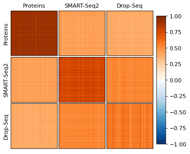
1.2.4. Fig. 5D - Variance analysis#
adata = protein_adata.copy()
sc.pp.filter_cells(adata, min_genes=600)
sc.pp.filter_genes(adata, min_cells=0.15 * adata.shape[0])
dir_core_proteome = 'CoreProteome.txt'
core_proteins = list(pd.read_csv(dir_core_proteome, sep='\t')['Genes'])
color = {
'Core proteome genes': newcmp(.85),
'Other proteins': newcmp(0.15)
}
adata.var['core/noncore'] = [
'Core proteome genes' if prot in core_proteins
else 'Other proteins'
for prot in adata.var_names
]
mean = np.nanmean(adata.X, axis=0)
coeff_of_var = scipy.stats.variation(adata.X, nan_policy='omit').data
g = sns.JointGrid(
x=np.log2(mean),
y=np.log2(coeff_of_var),
hue=adata.var['core/noncore'],
palette=color,
)
g.plot_joint(
sns.scatterplot,
s=10,
alpha=1,
linewidth=.1
)
g.plot_marginals(
sns.histplot,
kde=True,
stat='density',
common_norm=False,
binwidth=.2,
alpha=.8
)
g.ax_joint.set_xlabel('log 2 mean')
g.ax_joint.set_ylabel('log 2 coefficient of variation')
g.ax_joint.set_xlim(-4, 18)
g.ax_joint.set_ylim(-4, 4)
g.ax_joint.plot([-6, 10], [3, -5], '--',c='black', label='Poisson distribution')
g.ax_joint.legend(title=[])
plt.suptitle(datasetname, y=1)
plt.show()
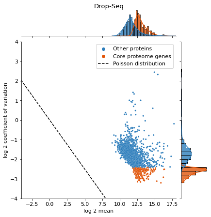
1.2.5. Fig. 5E - Variance comparison#
full_data = {
'Proteins': protein_adata.copy(),
'SMART-Seq2': smartseq_adata.copy(),
'Drop-Seq': tenx_adata.copy(),
}
for adata in full_data.values():
sc.pp.filter_cells(adata, min_genes=600)
sc.pp.filter_genes(adata, min_cells=0.15 * adata.shape[0])
for name, adata in full_data.items():
if name != 'Proteins':
sc.pp.normalize_total(adata, target_sum=np.mean(np.nansum(adata.X, axis=1)))
Observation names are not unique. To make them unique, call `.obs_names_make_unique`.
/Users/sabrina.richter/anaconda3/envs/tissue/lib/python3.8/site-packages/anndata/_core/anndata.py:1094: FutureWarning: is_categorical is deprecated and will be removed in a future version. Use is_categorical_dtype instead
if not is_categorical(df_full[k]):
Observation names are not unique. To make them unique, call `.obs_names_make_unique`.
Observation names are not unique. To make them unique, call `.obs_names_make_unique`.
Observation names are not unique. To make them unique, call `.obs_names_make_unique`.
Observation names are not unique. To make them unique, call `.obs_names_make_unique`.
cov = []
hue = []
dataset_name = []
for datasetname, adata in full_data.items():
adata.var['core/noncore'] = ['Core proteome genes' if prot in core_proteins else 'Other proteins' for prot in adata.var_names]
mean = np.nanmean(adata.X, axis=0)
coeff_of_var = scipy.stats.variation(adata.X, nan_policy='omit').data
cov += list(coeff_of_var)
hue += list(adata.var['core/noncore'])
dataset_name += [datasetname] * adata.shape[1]
sns.boxplot(
x = dataset_name,
y=cov,
hue=hue,
palette=color,
showfliers=False,
)
plt.ylabel('coefficient of variation')
plt.ylim(top=6)
plt.show()
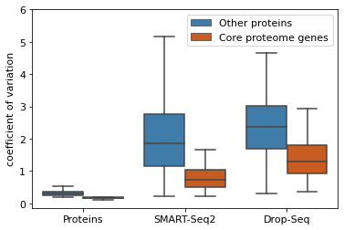
1.3. Supplementary Analyses#
1.3.1. Effect of Local Regression Normalisation#
adata_normalised = protein_adata.copy()
sc.pp.filter_cells(adata_normalised, min_genes=600)
sc.pp.filter_genes(adata_normalised, min_cells=0.15 * adata_normalised.shape[0])
sc.pp.log1p(adata_normalised)
adata_normalised.X = np.nan_to_num(adata_normalised.X)
adata_raw = adata_prot_raw.copy()
sc.pp.filter_cells(adata_raw, min_genes=600)
sc.pp.filter_genes(adata_raw, min_cells=0.15 * adata_raw.shape[0])
sc.pp.log1p(adata_raw)
adata_raw.X = np.nan_to_num(adata_raw.X)
/Users/sabrina.richter/anaconda3/envs/tissue/lib/python3.8/site-packages/anndata/_core/anndata.py:1094: FutureWarning: is_categorical is deprecated and will be removed in a future version. Use is_categorical_dtype instead
if not is_categorical(df_full[k]):
x = adata_raw.X.sum(axis=1)
y = (adata_raw.X > 0).sum(axis=1)
plt.scatter(x, y, s=1)
plt.xlabel('Raw MS-Signal per cell')
plt.ylabel('Identified proteins per cell')
plt.show()
x = adata_normalised.X.sum(axis=1)
y = (adata_normalised.X > 0).sum(axis=1)
plt.scatter(x, y, s=1)
plt.xlabel('Normalized MS-Signal per cell')
plt.ylabel('Identified proteins per cell')
plt.show()
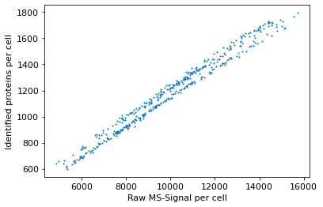
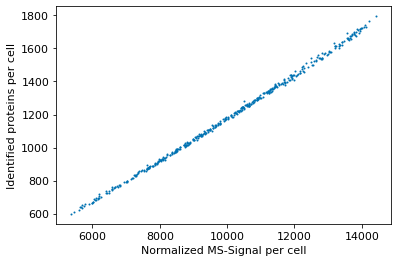
1.3.2. PCA including untreated cells#
adata = protein_adata.copy()
sc.pp.filter_cells(adata, min_genes=600)
sc.pp.filter_genes(adata, min_cells=0.15 * adata.shape[0])
sc.pp.log1p(adata)
impute_downshifted_normal_global(adata)
adata.obs['condition'] = [
'G1' if '_G1_' in name
else 'G1-S' if '_TB_' in name
else 'G2' if '_G2_' in name
else 'G2-M' if '_NB_' in name
else 'UB_Passage01' if 'UB' in name and '20201010' in name
else 'UB_Passage02_Plate01' if 'UB' in name and int(name.split('_')[16].split('.')[0]) < 5050
else 'UB_Passage02_Plate02'
for name in adata.obs_names
]
sc.pp.pca(adata)
sc.pl.pca(adata, color='condition', annotate_var_explained=True)
plt.show()
/Users/sabrina.richter/anaconda3/envs/tissue/lib/python3.8/site-packages/anndata/_core/anndata.py:1192: FutureWarning: is_categorical is deprecated and will be removed in a future version. Use is_categorical_dtype instead
if is_string_dtype(df[key]) and not is_categorical(df[key])
... storing 'condition' as categorical
1.3.3. Cell cycle stage prediction#
adata = protein_adata.copy()
sc.pp.filter_cells(adata, min_genes=600)
sc.pp.filter_genes(adata, min_cells=0.7 * adata.shape[0])
sc.pp.log1p(adata)
adata.X = np.nan_to_num(adata.X)
adata.obs['cell cycle stage'] = [
'G1' if '_G1_' in name
else 'G1-S' if '_TB_' in name
else 'G2' if '_G2_' in name
else 'G2-M' if '_NB_' in name
else 'other'
for name in adata.obs_names
]
adata = adata[adata.obs['cell cycle stage'] != 'other']
/Users/sabrina.richter/anaconda3/envs/tissue/lib/python3.8/site-packages/anndata/_core/anndata.py:1094: FutureWarning: is_categorical is deprecated and will be removed in a future version. Use is_categorical_dtype instead
if not is_categorical(df_full[k]):
cc_markers = pd.read_excel("CellCycleMarker.xlsx", "Tami_Geiger")
g1_list = cc_markers['G1'][1:-1]
g1_list = [g for g in g1_list if g in adata.var_names]
print(f'G1:\t {", ".join(g1_list)}')
s_list = cc_markers['S'][1:-1]
s_list = [g for g in s_list if g in adata.var_names]
print(f'S:\t {", ".join(s_list)}')
g2m_list = cc_markers['G2M'][1:-1]
g2m_list = [g for g in g2m_list if g in adata.var_names]
print(f'G2M:\t {", ".join(g2m_list)}')
G1: MARCKS, KRT1, HIST1H1E, KRT18, HNRNPA1, CHCHD3, CD44, NASP, TARDBP, PODXL, SUMO2, STMN1, TRIM28, SPTAN1
S: NOLC1, ATP2A2, CANX, TMX1, CKB, SLC25A3, SLC16A1, MT-CO2, SRPRB, CYB5R3, LETM1, ANP32B
G2M: TOP2A, HMGB1, EIF5B, TMSB10, EIF3D, ANP32A, RCC2, FASN, LUC7L2, AARS, KPNA2, CKAP5
sc.tl.score_genes(adata, g1_list, score_name='g1')
sc.tl.score_genes(adata, s_list, score_name='s')
sc.tl.score_genes(adata, g2m_list, score_name='g2m')
Trying to set attribute `.obs` of view, copying.
for pair in [('G2', 'G1'), ('G2-M', 'G1')]:
data_comparison = adata[np.array(adata.obs['cell cycle stage'] == pair[0])
| np.array(adata.obs['cell cycle stage'] == pair[1])]
score = {}
score['G2-M'] = data_comparison.obs['g2m'].values
score['S'] = data_comparison.obs['s'].values
score['G1'] = data_comparison.obs['g1'].values
for phase in score.keys():
true_label = np.array([phase in a or (phase == 'S' and a == 'G1') or a in phase for a in data_comparison.obs['cell cycle stage'].values])
scores = score[phase]
print(f'AUC using the {phase} score: {sklearn.metrics.roc_auc_score(true_label, scores):.2f}')
fp, tp, _ = sklearn.metrics.roc_curve(true_label, scores)
plt.plot(fp, tp, label=phase)
plt.plot([0, 1], [0, 1], c='black')
plt.gca().set_aspect('equal')
plt.xlabel('False-positive')
plt.ylabel('True-positive')
plt.legend()
plt.title(f'{pair[0]} vs {pair[1]}')
plt.show()
AUC using the G2-M score: 0.46
AUC using the S score: 0.35
AUC using the G1 score: 0.67
AUC using the G2-M score: 0.66
/Users/sabrina.richter/anaconda3/envs/tissue/lib/python3.8/site-packages/anndata/_core/anndata.py:1094: FutureWarning: is_categorical is deprecated and will be removed in a future version. Use is_categorical_dtype instead
if not is_categorical(df_full[k]):
AUC using the S score: 0.52
AUC using the G1 score: 0.84
1.3.4. Data completeness#
full_data = {
'Proteins': protein_adata.copy(),
'SMART-Seq2': smartseq_adata.copy(),
'Drop-Seq': tenx_adata.copy(),
}
for adata in full_data.values():
sc.pp.filter_cells(adata, min_genes=600)
Observation names are not unique. To make them unique, call `.obs_names_make_unique`.
/Users/sabrina.richter/anaconda3/envs/tissue/lib/python3.8/site-packages/anndata/_core/anndata.py:1094: FutureWarning: is_categorical is deprecated and will be removed in a future version. Use is_categorical_dtype instead
if not is_categorical(df_full[k]):
Observation names are not unique. To make them unique, call `.obs_names_make_unique`.
Observation names are not unique. To make them unique, call `.obs_names_make_unique`.
shared_genes = set(full_data['Proteins'].var_names)
for adata in full_data.values():
shared_genes = shared_genes.intersection(adata.var_names)
intersection_data = {
datasetname: adata[:, list(shared_genes)]
for datasetname, adata in full_data.items()
}
perc_expr = []
dataset_name = []
for datasetname, adata in intersection_data.items():
print(f'{datasetname} {adata.shape}')
perc_expr += list((adata.X > 0).mean(axis=1))
dataset_name += [datasetname] * adata.X.shape[0]
sns.violinplot(y=perc_expr, x=dataset_name)
plt.ylabel('Gene/Protein expression completeness per cell')
plt.show()
Proteins (424, 2447)
SMART-Seq2 (720, 2447)
Drop-Seq (5022, 2447)
for name, adata in full_data.items():
completeness = (adata.X > 0).sum(axis=0) / adata.X.shape[0]
sorted_completeness = np.sort(completeness)[::-1]
plt.plot(np.arange(len(sorted_completeness)) + 1, sorted_completeness, label=name)
plt.legend()
plt.ylabel('Gene/Protein completeness')
plt.xlabel('Ranked protein (by completeness)')
plt.xscale("log")
plt.show()
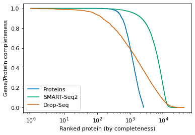
for datasetname, adata in full_data.items():
x = np.nanmean(adata.X, axis=0)
y = np.nanmean(adata.X > 0, axis=0)
plt.scatter(np.log(x), y, s=1, label=datasetname)
# Pois(0) = exp(-mean) -> prob for k zeros in n cells = Binom(k|p, n), with expectation p*n -> divide by n
x2 = np.arange(0, 1000000, 0.1)
plt.plot(np.log(x2), 1-np.exp(-x2), c='black', label='expected poisson dropout')
plt.xlabel('log mean protein abundance')
plt.ylabel('Completeness accross cells')
plt.legend(markerscale=5., loc='upper left')
plt.show()
<ipython-input-43-a69cb3e7f1f8>:4: RuntimeWarning: divide by zero encountered in log
plt.scatter(np.log(x), y, s=1, label=datasetname)
<ipython-input-43-a69cb3e7f1f8>:8: RuntimeWarning: divide by zero encountered in log
plt.plot(np.log(x2), 1-np.exp(-x2), c='black', label='expected poisson dropout')
1.3.5. Variance analyses#
full_data = {
'Proteins': protein_adata.copy(),
'SMART-Seq2': smartseq_adata.copy(),
'Drop-Seq': tenx_adata.copy(),
}
for adata in full_data.values():
sc.pp.filter_cells(adata, min_genes=600)
sc.pp.filter_genes(adata, min_cells=0.15 * adata.shape[0])
for name, adata in full_data.items():
print(name, np.mean(np.nansum(adata.X, axis=1)))
if name != 'Proteins':
sc.pp.normalize_total(adata, target_sum=np.mean(np.nansum(adata.X, axis=1)))
Observation names are not unique. To make them unique, call `.obs_names_make_unique`.
/Users/sabrina.richter/anaconda3/envs/tissue/lib/python3.8/site-packages/anndata/_core/anndata.py:1094: FutureWarning: is_categorical is deprecated and will be removed in a future version. Use is_categorical_dtype instead
if not is_categorical(df_full[k]):
Observation names are not unique. To make them unique, call `.obs_names_make_unique`.
Observation names are not unique. To make them unique, call `.obs_names_make_unique`.
Observation names are not unique. To make them unique, call `.obs_names_make_unique`.
Observation names are not unique. To make them unique, call `.obs_names_make_unique`.
Proteins 9631877.0
SMART-Seq2 231281.56
Drop-Seq 7808.1196
mean = []
coeff_of_var = []
name = []
for datasetname, adata in full_data.items():
data = adata.X.copy()
mean += list(np.nanmean(data, axis=0))
coeff_of_var += list(scipy.stats.variation(data, nan_policy='omit').data)
name += [datasetname] * len(np.nanmean(data, axis=0))
color = {
'Proteins': 'red',
'SMART-Seq2': 'blue',
'Drop-Seq': 'yellow',
}
g = sns.JointGrid(
x=np.log2(mean),
y=np.log2(coeff_of_var),
hue=name,
palette=color,
)
g.plot_joint(
sns.scatterplot,
s=10,
alpha=1,
linewidth=.1
)
g.plot_marginals(
sns.histplot,
kde=True,
stat='density',
common_norm=False,
binwidth=.2,
alpha=.8
)
g.ax_joint.set_xlabel('log 2 mean')
g.ax_joint.set_ylabel('log 2 coefficient of variation')
g.ax_joint.set_xlim(-4, 19)
g.ax_joint.set_ylim(-4, 4.2)
g.ax_joint.plot([-6, 10], [3, -5], '--',c='black', label='Poisson distribution')
g.ax_joint.legend(title=[])
plt.show()
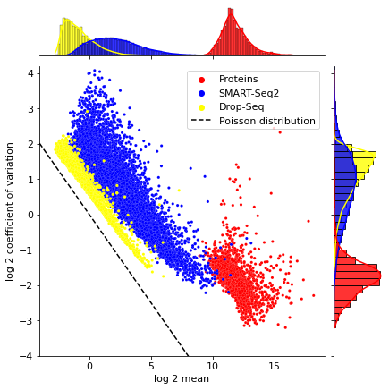
dir_core_proteome = 'CoreProteome.txt'
core_proteins = list(pd.read_csv(dir_core_proteome, sep='\t')['Genes'])
cov = []
hue = []
dataset_name = []
color = {
'Core proteome genes': newcmp(.85),
'Other proteins': newcmp(0.15)
}
for datasetname, adata in full_data.items():
adata.var['core/noncore'] = ['Core proteome genes' if prot in core_proteins else 'Other proteins' for prot in adata.var_names]
mean = np.nanmean(adata.X, axis=0)
coeff_of_var = scipy.stats.variation(adata.X, nan_policy='omit').data
cov += list(coeff_of_var)
hue += list(adata.var['core/noncore'])
g = sns.JointGrid(
x=np.log2(mean),
y=np.log2(coeff_of_var),
hue=adata.var['core/noncore'],
palette=color,
)
g.plot_joint(
sns.scatterplot,
s=10,
alpha=1,
linewidth=.1
)
g.plot_marginals(
sns.histplot,
kde=True,
stat='density',
common_norm=False,
binwidth=.2,
alpha=.8
)
g.ax_joint.set_xlabel('log 2 mean')
g.ax_joint.set_ylabel('log 2 coefficient of variation')
g.ax_joint.set_xlim(-4, 19)
g.ax_joint.set_ylim(-4, 4.2)
g.ax_joint.plot([-6, 10], [3, -5], '--',c='black', label='Poisson distribution')
g.ax_joint.legend(title=[])
plt.suptitle(datasetname, y=1)
plt.show()
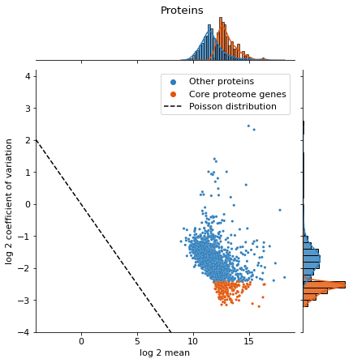
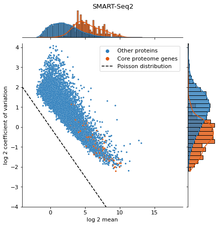
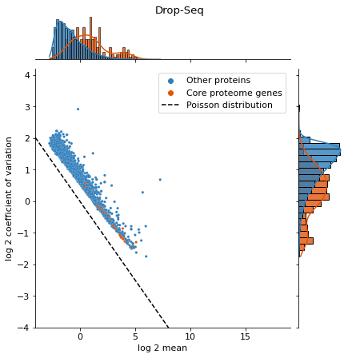
inter = set(full_data['Proteins'].var_names)
for adata in full_data.values():
inter = inter.intersection(adata.var_names)
intersection_data = {}
for datasetname, adata in full_data.items():
intersection_data[datasetname] = adata[:, list(inter)]
cvs = {}
for datasetname, adata in intersection_data.items():
cvs[datasetname] = scipy.stats.variation(adata.X, nan_policy='omit').data
/Users/sabrina.richter/anaconda3/envs/tissue/lib/python3.8/site-packages/anndata/_core/anndata.py:1094: FutureWarning: is_categorical is deprecated and will be removed in a future version. Use is_categorical_dtype instead
if not is_categorical(df_full[k]):
x = []
y = []
for pair in [('Proteins', 'SMART-Seq2'), ('Proteins', 'Drop-Seq'), ('SMART-Seq2', 'Drop-Seq')]:
r = scipy.stats.pearsonr(np.log2(cvs[pair[0]]), np.log2(cvs[pair[1]]))[0]
x.append(f'{pair[0]} vs {pair[1]}')
y.append(r)
plt.scatter(
x=x,
y=y,
)
plt.ylabel('Pearson\'s Correlation between log2 cv')
plt.ylim(-0.01, 1.01)
plt.show()
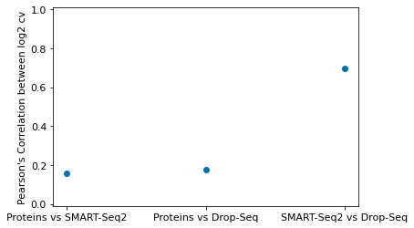
for pair in [('SMART-Seq2', 'Drop-Seq'), ('Proteins', 'SMART-Seq2'), ('Proteins', 'Drop-Seq')]:
plt.figure(figsize=(4,4))
plt.scatter(np.log2(cvs[pair[0]]), np.log2(cvs[pair[1]]), s=1)
plt.xlabel(f'log2 cv {pair[0]}')
plt.ylabel(f'log2 cv {pair[1]}')
plt.show()
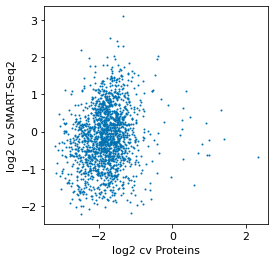
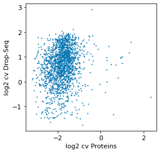
for pair in [('Proteins', 'Drop-Seq'), ('Proteins', 'SMART-Seq2')]:
plt.figure(figsize=(4,4))
plt.scatter(cvs[pair[0]], cvs[pair[1]], s=1)
plt.xlabel(f'CV({pair[0]})')
plt.ylabel(f'CV({pair[1]})')
plt.plot([-1, 5], [-1, 5], '--', c='black')
plt.axis('equal')
plt.gca().set_ylim(-.5, 5)
plt.gca().set_xlim(-.5, 5)
plt.show()
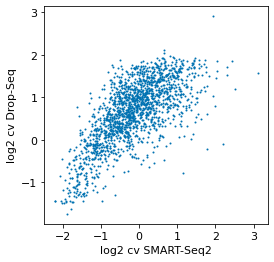
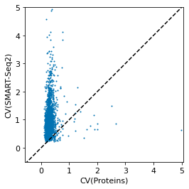
1.3.6. Correlation analyses#
full_data = {
'Proteins': protein_adata.copy(),
'SMART-Seq2': smartseq_adata.copy(),
'Drop-Seq': tenx_adata.copy(),
}
for adata in full_data.values():
sc.pp.filter_cells(adata, min_genes=600)
sc.pp.filter_genes(adata, min_cells=0.15 * adata.shape[0])
for name, adata in full_data.items():
if name != 'Proteins':
sc.pp.normalize_total(adata, target_sum=np.mean(np.nansum(adata.X, axis=1)))
sc.pp.log1p(adata.X)
shared_genes = set(full_data['Proteins'].var_names)
for adata in full_data.values():
shared_genes = shared_genes.intersection(adata.var_names)
intersection_data = {}
for datasetname, adata in full_data.items():
intersection_data[datasetname] = adata[:, list(shared_genes)]
Observation names are not unique. To make them unique, call `.obs_names_make_unique`.
/Users/sabrina.richter/anaconda3/envs/tissue/lib/python3.8/site-packages/anndata/_core/anndata.py:1094: FutureWarning: is_categorical is deprecated and will be removed in a future version. Use is_categorical_dtype instead
if not is_categorical(df_full[k]):
Observation names are not unique. To make them unique, call `.obs_names_make_unique`.
Observation names are not unique. To make them unique, call `.obs_names_make_unique`.
Observation names are not unique. To make them unique, call `.obs_names_make_unique`.
Observation names are not unique. To make them unique, call `.obs_names_make_unique`.
cell1 = np.nan_to_num(full_data['Proteins'].X[14, :].copy())
cell2 = np.nan_to_num(full_data['Proteins'].X[15, :].copy())
grid = sns.jointplot(cell1, cell2, alpha=0.5, marginal_kws={'bins': 20})
grid.set_axis_labels('log intensity cell #1', 'log intensity cell #2')
plt.show()
/Users/sabrina.richter/anaconda3/envs/tissue/lib/python3.8/site-packages/seaborn/_decorators.py:36: FutureWarning: Pass the following variables as keyword args: x, y. From version 0.12, the only valid positional argument will be `data`, and passing other arguments without an explicit keyword will result in an error or misinterpretation.
warnings.warn(
r_values = []
data_type = []
for datasetname, adata in full_data.items():
r = np.array(pd.DataFrame(adata.X).T.corr())
np.fill_diagonal(r, np.nan)
r_vals = [val for val in r.flatten() if not np.isnan(val)]
r_values += r_vals
data_type += [datasetname] * len(r_vals)
r_vals = np.array(r_values)
for datasetname in full_data.keys():
corrs = r_vals[np.array(data_type) == datasetname]
ax = sns.boxplot(
x=data_type,
y=r_values,
width=0.6,
showfliers=False,
)
ax.set_ylabel("Pearson correlation between two cells")
plt.ylim(-0.01, 1.01)
plt.title('All genes')
plt.show()
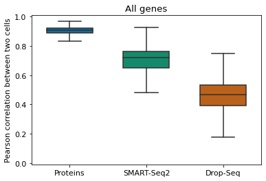
r_values = []
data_type = []
for datasetname, adata in intersection_data.items():
r = np.array(pd.DataFrame(adata.X).T.corr())
np.fill_diagonal(r, np.nan)
r_vals = [val for val in r.flatten() if not np.isnan(val)]
r_values += r_vals
data_type += [datasetname] * len(r_vals)
r_vals = np.array(r_values)
for datasetname in full_data.keys():
corrs = r_vals[np.array(data_type) == datasetname]
ax = sns.boxplot(
x=data_type,
y=r_values,
width=0.6,
showfliers=False,
)
ax.set_ylabel("Pearson correlation between two cells")
plt.ylim(-0.01, 1.01)
plt.title('Shared genes')
plt.show()
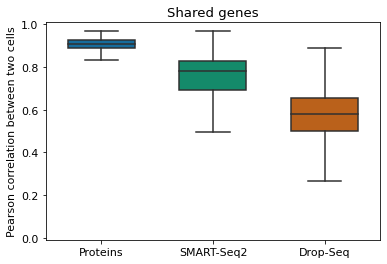
1.3.7. Abundance value distributions#
full_data = {
'Proteins': protein_adata.copy(),
'SMART-Seq2': smartseq_adata.copy(),
'Drop-Seq': tenx_adata.copy(),
}
for adata in full_data.values():
sc.pp.log1p(adata.X)
Observation names are not unique. To make them unique, call `.obs_names_make_unique`.
for name, adata in full_data.items():
vals = adata.X.flatten()
vals = vals[vals != 0]
plt.hist(vals, bins=100)
plt.title(name)
plt.xlabel('log_10 abundance')
plt.ylabel('Count')
plt.show()
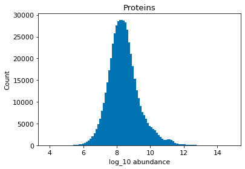
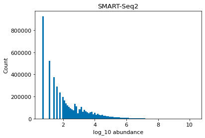
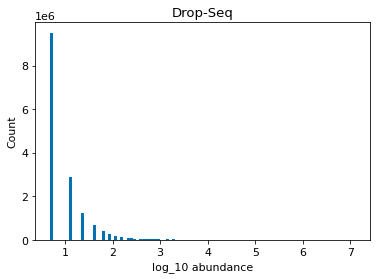
1.3.8. Data before and after filtering#
full_data = {
'Proteins': protein_adata.copy(),
'SMART-Seq2': smartseq_adata.copy(),
'Drop-Seq': tenx_adata.copy(),
}
print('Before filtering:')
full_data
Observation names are not unique. To make them unique, call `.obs_names_make_unique`.
Before filtering:
{'Proteins': AnnData object with n_obs × n_vars = 434 × 2480,
'SMART-Seq2': AnnData object with n_obs × n_vars = 720 × 24990,
'Drop-Seq': AnnData object with n_obs × n_vars = 5665 × 41161}
for adata in full_data.values():
sc.pp.filter_cells(adata, min_genes=600)
sc.pp.filter_genes(adata, min_cells=0.15 * adata.shape[0])
print('After filtering:')
full_data
/Users/sabrina.richter/anaconda3/envs/tissue/lib/python3.8/site-packages/anndata/_core/anndata.py:1094: FutureWarning: is_categorical is deprecated and will be removed in a future version. Use is_categorical_dtype instead
if not is_categorical(df_full[k]):
Observation names are not unique. To make them unique, call `.obs_names_make_unique`.
Observation names are not unique. To make them unique, call `.obs_names_make_unique`.
Observation names are not unique. To make them unique, call `.obs_names_make_unique`.
Observation names are not unique. To make them unique, call `.obs_names_make_unique`.
After filtering:
{'Proteins': AnnData object with n_obs × n_vars = 424 × 1867
obs: 'n_genes'
var: 'n_cells',
'SMART-Seq2': AnnData object with n_obs × n_vars = 720 × 10557
obs: 'n_genes'
var: 'n_cells',
'Drop-Seq': AnnData object with n_obs × n_vars = 5022 × 6701
obs: 'n_genes'
var: 'n_cells'}